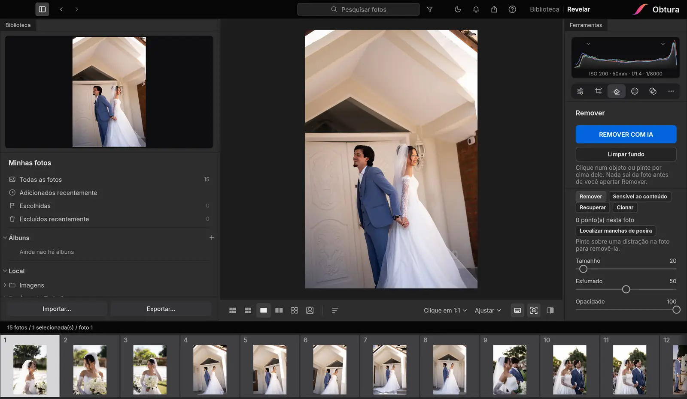

Remover pessoas e objetos do fundo da foto
O videomaker atrás do noivo, o extintor na parede, a sacola no canto. Com o Obtura, um clique e sumiu.
Testar 14 dias grátisSem cartão de crédito · Mac e Windows

Como funciona
Clique no objeto ou pinte por cima dele. A IA encontra o contorno, apaga e preenche o fundo de um jeito natural. Funciona com pessoas, câmeras, tomadas, placas, fios e outras distrações.
Limpar fundo em várias fotos de uma vez
Selecione as fotos e use Limpar fundo: o Obtura encontra a equipe e outros fotógrafos atrás dos noivos e limpa todas as fotos selecionadas com um botão só.
Sem estragar o arquivo original
A edição não é destrutiva: o RAW original continua intacto e você pode desfazer quando quiser. Tudo roda no seu computador, sem enviar as fotos para a internet.
Perguntas frequentes
Funciona em RAW?
Sim. A remoção é feita sobre o seu RAW, que continua editável.
Dá para remover uma pessoa inteira?
Sim. O Remover com IA seleciona a pessoa inteira com um clique e refaz o fundo atrás dela.
Preciso pagar por cada foto?
Não. A remoção roda no seu computador e está incluída na assinatura, sem limite de fotos.
Tem teste grátis?
Sim, 14 dias grátis, sem cartão de crédito, no Mac ou no Windows.